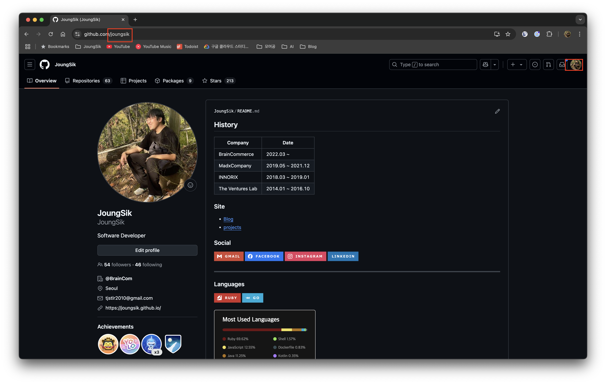

시작하며
지금 이 블로그는 GitHub의 GitHub Pages 기능을 활용하여 만든 정적 사이트 블로그입니다.
이 글에서는 블로그를 만드는 과정을 단계별로 정리했습니다.
준비물
GitHub Pages 기능을 활용하기 때문에 GitHub 계정이 필요합니다.
GitHub 계정을 생성했다면, 코드를 저장할 저장소 2개가 필요합니다. GitHub에서는 이를 저장소(Repository, 줄여서 repo)라고 부릅니다.
GitHub 웹사이트에서 ‘New repository’ 버튼을 통해 저장소를 생성합니다.
이때 생성할 저장소 2개의 이름은 각각 blog와 {UserName}.github.io로 합니다.
blog 저장소는 다른 이름으로 만들어도 괜찮습니다. 하지만 {UserName}.github.io 저장소는 GitHub Pages 기능을 사용하기 위해 반드시 이 형식을 따라야 합니다. {UserName} 부분에는 본인의 GitHub 사용자 이름을 넣어야 합니다.
예를 들어, 제 GitHub 사용자 이름은 joungsik이므로 저장소 이름은 joungsik.github.io가 됩니다.

마지막으로, 블로그 콘텐츠를 생성하고 관리하는 도구인 Hugo를 PC에 설치해야 합니다.
Hugo는 Go 언어로 작성된 빠르고 유연한 정적 사이트 생성기(Static Site Generator, SSG) 입니다.
Hugo 설치 에서 PC 에 맞게 설치 방법을 찾아 설치합니다.
Hugo
Hugo 는 GoLang 으로 만들어진 오픈소스 입니다.
저는 주로 Ruby로 개발하지만, 병렬 처리나 성능 최적화가 필요한 부분에서는 GoLang을 활용합니다. GoLang의 매력에 빠져, GoLang 기반의 정적 사이트 생성기를 찾던 중 Hugo를 선택하게 되었습니다.
블로그 생성
Hugo는 다양한 명령어를 제공하지만, 이 글에서는 주로 사용하는 몇 가지 명령어 위주로 설명하겠습니다.

먼저 블로그 프로젝트를 생성합니다. 터미널에서 다음 명령어를 실행합니다.
hugo new site blog # 'blog'라는 이름의 새 Hugo 사이트 생성
이렇게 블로그 프로젝트를 생성합니다.
그러면 다음처럼 프로젝트가 생성된걸 볼 수 있습니다.
(참고: 저는 Markdown 미리보기가 편리한 Visual Studio Code를 사용하여 블로그 글을 작성하고 있습니다.)
명령어를 실행하면 blog 디렉토리가 생성되고 그 안에 여러 파일과 디렉토리가 만들어집니다. 오늘은 이 중에서 콘텐츠가 저장될 content, 설정 파일인 hugo.toml 를 주로 다룰 것입니다.
다른 디렉토리는 추후 필요할 때 설명하겠습니다.
여기까지 진행했다면, 생성된 블로그 프로젝트를 앞서 만든 blog GitHub 저장소에 업로드합니다.
먼저, blog 디렉토리로 이동하여 Git 저장소를 초기화하고, 지금까지의 작업 내용을 로컬 Git 저장소에 커밋합니다.
cd blog
git init # 현재 디렉토리를 Git 저장소로 초기화
git add ./
git commit -m "first commit"
GitHub 의 blog 프로젝트, 즉 remote git 에 로컬 git 을 연결합니다.
원격 저장소 주소는 해당 GitHub 저장소 페이지에서 확인할 수 있습니다.
아래 이미지는 제 GitHub 입니다.
HTTPS 주소도 사용할 수 있지만, 저는 주로 SSH 주소를 사용합니다. GitHub에 SSH 키를 등록해두면 비밀번호 입력 없이 편리하게 작업할 수 있습니다.
git remote add origin git@github.com:{UserName}/blog.git # SSH 방식 {UserName}을 본인 계정으로 변경
git remote -v # 등록된 remote git 확인 => origin 에 주소가 있다면 OK
이제 로컬 커밋을 원격 저장소로 푸시(push)합니다.
git push origin main
이제 blog GitHub 저장소에 접속하면 first commit 코드가 성공적으로 업로드된 것을 확인할 수 있습니다.
블로그 글 작성
다음은 블로그 글 작성하는 방법입니다.
Hugo는 Markdown으로 작성된 콘텐츠를 HTML 파일로 변환해주는 도구입니다.
따라서 우리는 Markdown 문법을 사용하여 블로그 글을 작성하면 됩니다.
새 글 파일은 다음 명령어로 생성합니다.
hugo new content/post/블로그-제목.md
그러면 content/post 디렉토리 아래에 블로그-제목.md 파일이 생성되게 됩니다.
기본적으로 content/posts 디렉토리에 생성되지만, archetypes/default.md 파일을 수정하거나 테마 설정에 따라 경로가 달라질 수 있습니다. 여기서는 content/post를 기준으로 설명합니다. (만약 content/post 디렉토리가 없다면 직접 생성해주세요.)
생성된 파일을 열어보면, 상단에 ‘front matter’라고 불리는 YAML, TOML, 또는 JSON 형식의 설정 정보가 포함된 것을 볼 수 있습니다.
이 front matter는 hugo new 명령 실행 시 자동으로 추가되며, 각 글의 제목, 작성일, 초안(draft) 상태 등을 정의합니다. archetypes/default.md 파일을 수정하여 기본 front matter 내용을 변경할 수도 있습니다.
기본 생성 내용은 다음과 같습니다. (hugo.toml 설정에 따라 형식이 다를 수 있습니다.)
---
title = '{{ replace .File.ContentBaseName `-` ` ` | title }}'
date: {{ .Date }}
draft: true
---
기본값은 다음과 같습니다:
title: 파일 이름에서 하이픈(-)을 공백으로 바꾼 후 각 단어의 첫 글자를 대문자로 변환한 값 (예:블로그 제목)date: 파일 생성 시각 (ISO 8601 형식)draft:true(초안 상태).true이면 실제 블로그에는 발행되지 않습니다. 발행하려면false로 변경하거나 이 줄을 삭제합니다.
이처럼 Go 템플릿 문법을 활용하여 동적으로 front matter 값을 설정할 수 있습니다.
front matter 아래에 Markdown 문법으로 자유롭게 글의 본문을 작성하면 됩니다.
작성 중인 글이 실제 블로그에 어떻게 보일지 확인하고 싶다면, 다음 명령어를 사용하여 로컬 개발 서버를 실행합니다.
hugo server -D # -D 옵션은 draft: true 인 글도 보이게 함
그러면 웹 브라우저에서 http://localhost:1313/ 주소로 접속하여 실시간으로 변경 사항을 확인하며 글을 작성할 수 있습니다. 파일을 저장하면 자동으로 브라우저가 새로고침되어 편리합니다. (Live Reloading)
블로그 테마 선택
모든 블로그에는 디자인을 담당하는 테마(Theme)가 필요하며, Hugo 역시 다양한 테마를 지원합니다.
Hugo 공식 웹사이트의 테마 목록에서 원하는 테마를 선택하여 사용할 수 있습니다.
저는 GitHub 을 좋아해서 마침 있던 GitHub Style 을 사용하고 있습니다.
블로그 테마 적용
여기서는 제가 사용하는 GitHub Style 테마를 기준으로 적용 방법을 설명합니다. 다른 테마도 유사한 방식으로 적용할 수 있습니다.
마음에 드는 테마를 선택했다면, 다음 단계에 따라 블로그에 적용합니다.
Hugo는 일반적으로 Git의 submodule 기능을 이용하여 테마를 관리합니다. 이를 통해 테마 코드를 내 프로젝트와 분리하여 관리하고 업데이트하기 용이합니다.
대부분의 테마는 공식 문서나 GitHub 저장소 README에 설치 및 설정 방법이 안내되어 있으므로, 해당 문서를 참고하는 것이 가장 좋습니다.
git submodule add git@github.com:MeiK2333/github-style.git themes/github-style # themes 디렉토리에 테마 설치
# cd themes/github-style # 테마 디렉토리로 이동 (필요시)
# git pull origin master # submodule 로 관리하는 테마의 최신 코드를 가져오기 (필요시)
git submodule add 명령어를 실행하면 themes 디렉토리 아래에 해당 테마의 코드가 다운로드되고, 프로젝트 루트에 .gitmodules 파일이 생성되어 submodule 정보가 기록됩니다.
GitHub Style 테마의 경우, Hugo의 기본 콘텐츠 디렉토리인 content/posts 대신 content/post를 사용합니다. 따라서 기존에 content/posts 디렉토리가 있다면 content/post로 이름을 변경해야 합니다. (만약 hugo new site blog 명령어로 처음 생성했다면 content 디렉토리만 존재하므로 이 단계는 생략해도 됩니다.)
mv content/posts content/post
테마를 적용합니다.
테마를 설정 파일(hugo.toml)에 지정하거나, 빌드 및 서버 실행 시 -t 또는 --theme 옵션으로 테마를 명시하여 적용합니다.
1. 설정 파일에 테마 지정 (권장):
hugo.toml 파일에 다음 줄을 추가합니다.
theme = "github-style"
이렇게 설정하면 hugo 또는 hugo server 명령어 실행 시 자동으로 해당 테마가 적용됩니다.
2. 명령어 옵션으로 테마 지정:
hugo -t github-style # 빌드 시 테마 지정
hugo server -t github-style # 로컬 서버 실행 시 테마 지정 (-D 옵션과 함께 사용 가능)
블로그 설정파일
hugo new site 명령으로 프로젝트를 생성하면 hugo.toml 파일(또는 설정에 따라 hugo.yaml, hugo.json)이 생성되며 기본적인 설정이 포함되어 있습니다.
baseURL = 'https://example.org/'
languageCode = 'en-us'
title = 'My New Hugo Site'
baseURL: 블로그가 최종적으로 배포될 주소입니다. GitHub Pages를 사용하므로https://{UserName}.github.io/로 수정합니다. ({UserName}은 본인 계정으로 변경)languageCode: 블로그의 기본 언어 설정입니다. 한국어 블로그라면ko-kr등으로 설정할 수 있습니다.title: 블로그 제목이므로 원하는 이름으로 변경합니다.theme: (앞서 설명) 사용할 테마의 이름을 지정합니다. 예:"github-style"
기본 설정 외에 테마별로 추가 설정이 필요한 경우가 많습니다. 예를 들어 메뉴 구성, 저작권 표시, 소셜 링크 등을 설정 파일에 추가해야 할 수 있습니다. 이는 테마 문서에서 요구하는 설정을 hugo.toml 파일에 추가해야 합니다. params 섹션 등을 활용하게 됩니다.
블로그 배포
블로그 글 작성을 완료하고 blog 저장소에 변경 사항을 반영(커밋 및 푸시)했다면, 이제 실제 사용자들이 접속할 수 있도록 {UserName}.github.io 저장소에 빌드된 결과물을 배포해야 합니다.
hugo 명령어를 실행하여 로컬에서 블로그를 빌드하면 /public 디렉토리가 생성됩니다. (기본 설정이며, publishDir 설정으로 빌드 결과물 경로를 변경할 수 있습니다.) 이 디렉토리에는 웹사이트를 구성하는 모든 정적 파일(HTML, CSS, JS, 이미지 등)이 담겨 있습니다.
이 /public 디렉토리의 내용 전체를 미리 만들어둔 {UserName}.github.io 저장소의 루트(root)에 업로드(커밋 및 푸시)하면 배포가 완료됩니다. {UserName}.github.io 저장소의 main (또는 master) 브랜치에 푸시된 내용이 GitHub Pages를 통해 웹사이트로 발행됩니다.
배포 과정을 조금 더 간편하게 하려면, blog 프로젝트 내의 /public 디렉토리를 {UserName}.github.io 저장소의 submodule로 연결하는 방법도 있습니다. 이렇게 하면 hugo 명령으로 빌드한 후 /public 디렉토리에서 바로 커밋하고 푸시하여 배포할 수 있습니다.
더 나아가, blog 저장소에 새로운 커밋이 푸시될 때마다 자동으로 빌드 및 배포 과정을 수행하도록 GitHub Actions 워크플로우를 설정할 수도 있습니다. 이 자동 배포 설정 방법은 다음 글에서 자세히 다루겠습니다.
마무리
지금까지 Hugo와 GitHub Pages를 이용해 무료로 나만의 개발 블로그를 만드는 기본적인 과정을 살펴보았습니다. 다음 글에서는 Google Analytics 연동 방법과 GitHub Actions를 이용한 자동 배포 설정에 대해 다룰 예정입니다.
그 외에도 Hugo 공식 문서에는 다양한 기능과 활용법이 소개되어 있습니다. 문서를 참고하여 유용한 기능들을 적용해보고 관련 내용을 공유하도록 하겠습니다.
참조
아래는 참고할 만한 Hugo 공식 문서 링크입니다.